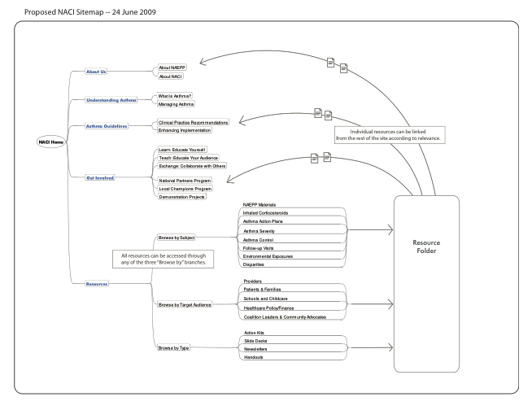
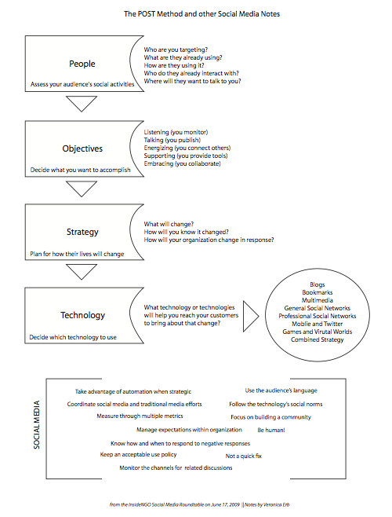
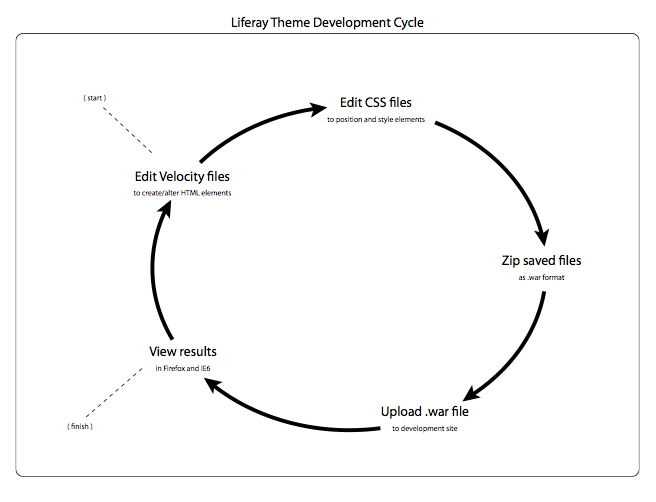
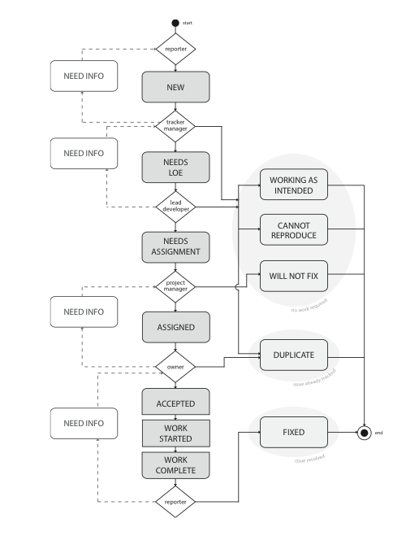

Portfolio: Diagrams
Site map: Simple and dynamic
Challenge:
Communicate the information architecture of the National Asthma Control Initiative website to the client.
Solution:
This simple site map, which pulled most of its content from a mind mapping tool, provided a way to visualize and discuss the architecture of the in-progress site.
Flowchart: Issue tracker process
Challenge:
Help members on the Rwanda Education Commons team understand the processing of tickets in our issue tracker.
Solution:
I created a flow chart that documented the process that tickets would go through and the roles which would have the responsibility to move the ticket through each stage.
Concept model: Development cycle
Challenge:
Explain to my Rwandan counterpart the preferred process for developing and publishing themes for Liferay Portal.
Solution:
I created this simple concept model to map each step needed to create and deploy a theme. When I explained the process, we spoke though VoIP and walked through the model step by step.
Concept model: Social media notes
Challenge:
Share a social media strategy planning process with team.
Solution:
In addition to talking my team through the POST Method at a team meeting, I handed out this diagram to capture the essential parts of the process.
Download PDF version of full UX portfolio.